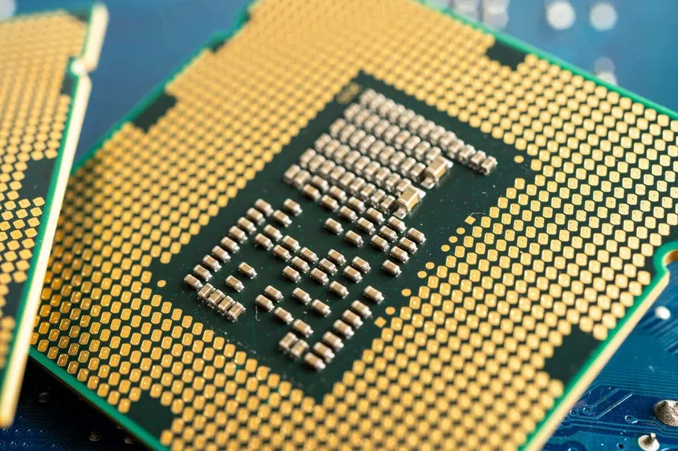
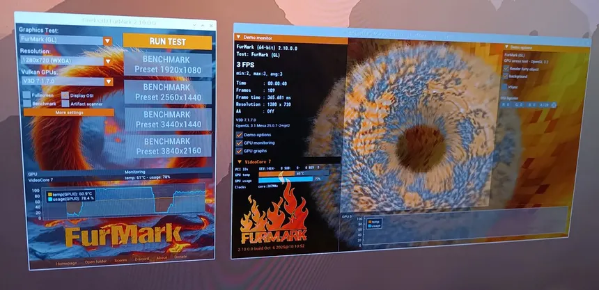
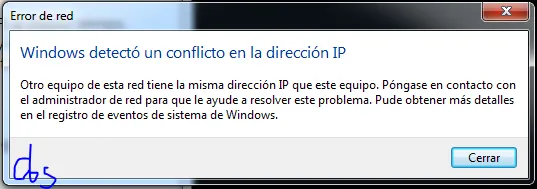

Etapa de diagnóstico
Responder las siguientes preguntas:
- Definan sistema operativo
- Diferencias entre memoria RAM y ROM
- Mencionar 2 ejemplos de mantenimiento preventivo en software
- Mencione las herramientas de un técnico
- ¿Qué debería tener en cuenta antes de actualizar un dispositivo?
- Describan qué es backup o copia de seguridad
Respuestas:
1) Un sistema operativo es un conjunto de programas que trabajan en conjunto para el funcionamiento del dispositivo, así mismo también controla y utiliza el hardware.
2) La RAM (Random Access Memory o Memoria de Acceso Aleatorio) es un componente de almacenamiento que funciona de manera volátil, en resumen, se eliminan sus datos una vez que se corta el suministro eléctrico, guarda los datos de acceso aleatorio. La ROM, en cambio, guarda datos de forma permanente, por ejemplo los datos del fabricante.
3) Actualizar los drivers y ejecutar un antivirus cada cierto tiempo.
4) Tester, Multímetro, cinta aislante, cinta de papel, pulsera antiestática, desatornillador philips, punta estrella, punta plana, regla, pasta térmica, goma de borrar, cuaderno, lapicera, corrector, marcador, alcohol isopropílico, algodón, hisopos, tarjeta, desatornillador crick, disco duro portable, pendrive, pendrive booteable y linterna.
5) Realizar una copia de seguridad y verificar que tenga el suministro eléctrico necesario para toda la descarga.
6) Simple y llanamente es un respaldo de datos del SO.
Nota Personal: 8.75
Actividad de diagnóstico
Responder las siguientes preguntas:
- ¿En cuántas partes se divide la placa madre? Mencione cada una
- ¿Por qué Windows se instala por defecto en la partición “C”?
- ¿Cuál es la diferencia entre actualización de software y sistema operativo?
- Describan los pasos para preparar un pendrive booteable
- ¿Cómo se accede al BIOS para cambiar el orden de arranque?
Respuestas:
1) La placa madre se divide en: Puerto Norte y Puerto Sur.
El Puerto Norte abarca: CPU, RAM, Tarjeta Gráfica, etc (Componentes de alto rendimiento).
El Puente Sur abarca: Almacenamientos (HDD, SSD, etc), puertos USB, audio, red, etc. (Encargada de los periféricos y dispositivos de entrada/salida).
2) Se instala en la partición “C” por el simple hecho de que “A” y “B” están destinadas a otros disquette.
3) La actualización de software abarca cambios o mejoras en programas específicos (Navegadores, aplicaciones, videojuegos, etc) y en el caso del SO que controla todo el hardware y coordina los programas. Su diferencia principal es que el SO afecta al entorno y gestión completo del equipo, el software es algo más “menor”.
4) Cómo preparar un pendrive booteable (con Rufus):
- Insertamos el pendrive.
- Ejecutamos el archivo .exe de Rufus.
- Seleccionamos la imagen ISO (previamente instalada).
- Iniciamos el proceso (en caso de que no toquemos las configuraciones demos predeterminado).
- Esperamos que termine el proceso (el programa te avisará).
- Quitamos el pendrive booteable.
¡Disfrutamos!
5) Pasos para acceder al BIOS:
1- Apenas se enciende el equipo, presionamos F2, F10 o Suprimir(eliminar).
2- Entramos al BIOS.
3- Buscamos “Boot”.
4- Allí podremos seleccionar qué dispositivo arranca primero.
5- Guardamos los cambios con F10.
Aviso
Repasar para la próxima clase los componentes internos de un PC y su funcionamiento. “Tipos de Memoria RAM y Placa Madre.”
Diagnóstico (Trabajo Grupal)
- Seleccionar una revista de técnico PC, que se encuentra en el classroom.
- Luego de leerla realizar un breve reporte sobre la misma, para luego exponerla en clase (Tiempo de la actividad: 30m)
Revista elegida: “Periféricos: Teclado, Mouse y Parlantes, N°22”
Integrantes: Quirós Benjamín, González Agustín, Navarro Mateo
Diagrama del funcionamiento detallado del ordenador
1. Entrada de datos - El usuario ingresa datos a través de dispositivos de entrada (Teclado, Mouse, etc). Los datos ingresados se envían al Procesador para su procesamiento.
2. Procesador (CPU) - Recibe instrucciones y datos del “Sistema Operativo” y de los programas. Ejecuta instrucciones y realiza cálculos. Almacena resultados en la “memoria RAM”.
3. Memoria RAM - Almacena datos y programas temporalmente mientras el ordenador está encendido. Proporciona acceso rápido a los datos y programas que el procesador necesita.
4. Disco Duro (HD) o Unidad de Estado Sólido (SSD) - Almacena datos y programas a largo plazo. Proporciona almacenamiento permanente para el sistema operativo, programas y archivos.
5. Tarjeta Gráfica - Procesa imágenes y vídeos para su visualización en la pantalla. Recibe instrucciones del “procesador” y envía la imagen procesada a la pantalla.
6. Salida de datos - Los resultados procesados se envían a dispositivos de salida (pantalla, impresora, etc.). El usuario puede ver los resultados en pantalla o imprimirlos.
7. Sistema Operativo - Gestión de los recursos del ordenador y proporciona una interfaz de usuario. Coordina la ejecución de programas y el acceso a los dispositivos de hardware.
Conexiones:
Procesador → Memoria RAM: El procesador accede a los datos y programas almacenados en la memoria RAM.
Memoria RAM → Disco Duro (HD) o SSD: La memoria RAM carga datos y programas desde el disco duro o SSD.
Procesador → Tarjeta gráfica (GPU): El procesador envía instrucciones a la tarjeta gráfica para procesar imágenes y video.
Tarjeta gráfica → Pantalla: La tarjeta gráfica envía las imágenes procesadas a la pantalla para su visualización.
Microprocesador (Actividad Individual)
Realizar un mapa conceptual que contenga: Funcionalidad, características, compatibilidad, velocidad, etc. Sobre el microprocesador.
| Funcionalidad | Características | Compatibilidad |
|---|---|---|
| Ejecuta instrucciones de software, gestiona datos y realiza operaciones Lógicas / Aritméticas de código binario. | Es un circuito integrado, se caracteriza por su velocidad de reloj (GHz) y el procesamiento de varios núcleos e instrucciones. - Su arquitectura se basa en bits. - Su consumo en vatios. - Algunos traen gráficos integrados. | La compatibilidad se establece según el socket de la placa base, chipset y la versión del BIOS. |
Núcleos: El trabajador físico, procesa info en paralelo y puede tener 2, 4, 8 o más núcleos, funciona por hilos, que es la división de trabajo.
Velocidad de Reloj: Es la velocidad que indica cuántos ciclos hace el microprocesador por segundo. 1 GHz = mil millones de ciclos por segundo. La velocidad promedio es 1.6 - 3.8 GHz.

Placa Madre
Actividad: 1- Clasificar, identificar y describir todos los componentes electrónicos de una placa madre. 2- Para la próxima clase estudiar TODO de la carpeta, probable examen sorpresa.
Componentes identificados:

- 1- Batería CR2032: Alimenta la placa madre, de litio y con 3v. CR: Litio. Primeros 2 dígitos: Mililitros de Litio. Segundos 2 dígitos: Grosor.
- 2- Conectores USB: Admiten 2 conectores USB del chasis de la placa madre.
- 3- PCI Express: Conectores para tarjetas de video.
- 4- PCI 1 y 2: Conectores universales para tarjetas de sonido, red, expansión.
- 5- Conector TPM: Almacena claves criptográficas para la protección de datos.
- 6- Conectores PCIE: Conectores modernos para dispositivos más pequeños como tarjetas de sonido.
- 7- Conector COM: Es un puerto serie, para cajas registradoras y demás.
- 8- Conector de audio frontal: Conector de auriculares, micrófono, etc.
- 9- Controladores de bus: Para dispositivos electrónicos (Fluye información de forma directa).
- 10- CPU FAN: Para conectar los sistemas de refrigeración.
- 11- Conectores para periféricos externos
- 12- Puerto VGA: Conectores de video, tarjeta gráfica, etc.
- 13- CMOS: Alimentación autónoma del BIOS.
- 14- Conector ATX-12V+: Adicional de 8 pines en caso de alto consumo.
- 15- Transistores MOSFET: Módulo regulador del voltaje VRAM.
- 16- Zócalo CPU: Lugar donde descansa el CPU.
- 17- Ranuras DIMM: Tarjetas de memoria RAM.
- 18- Conectores ATX: Fuente de alimentación.
- 19- Disipador (chipset debajo) del puente norte.
- 20- Condensadores: Absorben pulsos de la fuente de alimentación.
- 21- Chipset del Puente Sur: Encargado de los periféricos (A veces tiene disipador).
- 22- Bobina: Almacena y descarga.
- 23- Conector ID: Disco Duro.
- 24- BIOS: Sistema de arranque.
- 25- Inductores: Se opone a la corriente.
Aviso
Para la próxima clase investigar sobre los conectores del panel frontal de gabinete. Para la próxima clase estudiar para el oral TODO de la carpeta (En especial el diagrama).
Conectores del Panel Frontal
Los conectores del panel frontal son un conjunto de pines donde se conectan los cables del gabinete del PC, para que funcionen el botón de encendido (POWER), botón de reinicio (Reset) y el conjunto de luces (Encendido y el disco).
Colores de referencia:
- Verde: Led encendido
- Amarillo: LED del disco (HDD)
- Naranja: Botón de encendido
- Azul: Botón de reinicio
- Blanco/Negro: Tierra
Aviso y Tipos de Disco Duro
Examen oral sobre los contenidos de la carpeta.
Tipos de disco duro:
- HDD
- SSD: M.2 SATA, M.2 NVMe (2 más rápidos) / SSD SATA (Lentos, compatibles) / SSD PCIe (Expansión)
- Formatos M.2 comunes: 2280, 2260, 2242, 2930, 22110
Actividad N°1: Diagnóstico por código POST – Reparación
| ITEM | DETALLE |
|---|---|
| Falla reportada | “Al presionar el botón de encendido, los coolers giran 2 segundos y la PC se apaga sola, no hay pitidos. Al segundo intento pasa lo mismo.” |
| Hipótesis principal | “Se sospecha de 2 componentes críticos, los cuales son la PSU y la Motherboard, lo cual explica el porqué no hay pitido, pues la BIOS no llega a iniciarse.” |
| Descarte | “Descartamos la pila CMOS, puesto que es solo la encargada de guardar la configuración de la BIOS, incluso si no funciona la PC aún encendería.” |
| Método propuesto | “Antes de abrir el equipo, revisaremos los toma corrientes, el cable CA, desconectaremos los periféricos para asegurar que no haya corto, trataremos de encenderla nuevamente y oleremos cerca de los puertos USB y la PSU, una vez abierta, haremos un puente para verificar la PSU.” |
| Norma de seguridad | “Desconectaremos la electricidad de la PC, extraeremos la PSU, nos quitaremos la joyería que tengamos, nos atamos el pelo, evitamos usar ropa muy holgada y utilizamos una pulsera antiestática.” |
| Solución teórica | “Realizaremos un mantenimiento a ambos componentes (Motherboard, PSU) para intentar rescatarlos, en caso contrario realizaremos el reemplazo.” |
Respuestas a preguntas complementarias:
1) Los principales componentes sospechosos son la PSU y la motherboard. La PC no emite ningún pitido porque el BIOS no logra iniciarse.
2) La pila CMOS es la encargada de mantener la configuración de la BIOS. Cuando no funciona la PC sigue iniciando, pide F1, pero el internet no funciona, se desconfigura la fecha y hora, y por consecuente el navegador no funciona; esta no podría ser la causa porque no encaja en los síntomas.
3) Pasos sin abrir el gabinete: 1. Revisar el cable 220v (C.A). 2. Desconectar todos los periféricos USB para ver si no hay corto. 3. Prueba de olor.
Actividad 2: Análisis de compatibilidad – Instalación avanzada
| ITEM | DETALLE |
|---|---|
| Solicitud | “El cliente nos solicita armar una PC con los siguientes componentes: CPU Intel I5-12400f, Mother Asus B660M, RAM 16GB DDR5 5200MHz, GPU RTX 3060 y una PSU genérica de 500w, y verificar compatibilidad.” |
| Incompatibilidad 1 | “RAM DDR5 incompatible con Mother DDR4, una solución es vender la RAM DDR5 16GB y comprar 2 RAM 8GB DDR4.” |
| Incompatibilidad 2 | “PSU Genérica 500w insuficiente para GPU RTX 3060, solución propuesta: reemplazar PSU por una con verificación 80Plus > 650w.” |
| Riesgo detectado | La PSU de “500w” puede llegar a quemar la GPU y la Motherboard puesto que solo brinda 30w reales y el sistema completo MÍNIMO necesita 300w. |
| Normas aplicadas | “Verificar estándares de la fuente y no instalar componentes con riesgo, verificar lo mínimo y necesario que necesita cada componente.” |
Respuestas del análisis:
1) Compatible porque el CPU utiliza un LGA1700 y la motherboard posee uno. El socket LGA1700 simplemente hace alusión a sus 1700 contactos.
2) Incompatible. Esta no funcionaría porque la motherboard B660M es compatible con DDR4 y la DDR5 simplemente no encastra.
3) La PSU NO es adecuada para la GPU y es peligrosa, puesto que la GPU utiliza 170w y el sistema completo 360w, el problema está en que la fuente genérica de “500w” solo da 30w reales y 300w máximo. Esto puede quemar la GPU y la placa madre. (OVP: Protección contra sobre voltaje, UVP: Protección contra bajo voltaje).
Actividad 3: Análisis de Rendimiento (Cuello de Botella)

| ITEM | DETALLE |
|---|---|
| Síntoma | Fatiga general del sistema operativo. |
| Diagnóstico | Cuello de botella de RAM. El sistema está realizando swapping en el disco. |
| Causa raíz | RAM física insuficiente para la carga de trabajo. |
| Solución inmediata | Cierre de aplicaciones para liberar RAM. |
| Solución definitiva | Amplificación de RAM a 16GB totales. |
| Norma aplicada | ISO 9241: Norma internacional de ergonomía y usabilidad. Su objetivo es que los programas sean cómodos de usar. |
Respuestas del análisis:
1) El cuello de botella principal es la RAM. Fundamento: Aunque el disco esté al 100% es una consecuencia. La causa raíz es que la RAM está al 97%. El CPU está al 15%, es decir que no es fallo del procesador.
2) Al agotarse la RAM física, Windows mueve datos de la RAM a archivos de paginación en el disco. El disco se satura al 100% leyendo y escribiendo esos datos, que es 100 veces más lento que la RAM. Por eso se congela (Swapping).
3) Soluciones ordenadas por costo:
1. Costo 0: Cerrar programas y pestañas, limitar inicio automático.
2. Costo Bajo: Optimizar Windows, desactivar efectos visuales, ajustar memoria virtual.
3. Costo Alto: Solución definitiva, ampliar RAM física, instalar 8 GB de RAM mínimo.
Actividad 4: Normas de seguridad eléctrica y ESD
| ITEM | DETALLE |
|---|---|
| Tarea | Reemplazo de PSU (Power Supply Unit) |
| Riesgos Identificados | Riesgo eléctrico: Electrocución por 220v. Riesgo ESD: Daño a componentes. Riesgo Mecánico: Corte con una chapa. |
| Medidas preventivas | 1. Desenergizar y verificar ausencia de tensión. 2. Uso de EPP y zona EPA. 3. No abrir PSU. 4. Verificar puesta a tierra del taller. |
| Procedimiento | “Desconectar 220v (CA), colocarse pulsera, descargar la estática, desconectar cables ATX, CPU, PCI-E, retirar tornillos e instalar PSU.” |
| Protocolo de emergencia | “Usar matafuegos clase C (Anti chispa-humo), ante electrocución cortar energía general y llamar a emergencia. NO TOCAR A LA VÍCTIMA.” |
Respuestas de seguridad:
1) Elementos de Protección Personal (EPP):
- Pulsera antiestática: Previene ESD en la placa madre.
- Calzado de seguridad dieléctrico: Aísla de descargas a tierra.
- Anteojos de seguridad: Protege de explosión de capacitores.
2) Peligro de la PSU: Nunca se abre porque los capacitores de la fuente primaria almacenan 300V DC incluso semanas después de desconectada. La descarga puede ser mortal.
3) Falla de Disyuntor: No rearmarlo inmediatamente, significa que hay una fuga de corriente. Inmediatamente se debe retirar la PSU y etiquetarla como “fuera de servicio” para después enviarla a un personal especializado.
Actividad 5: Ergonomía en el puesto técnico
| ITEM | DETALLE |
|---|---|
| Puesto evaluado | Banco de preparación de notebooks. |
| Incumplimiento Ley 19.587 | Art 6: Altura de plano de trabajo inadecuado. Art 8: Silla no ergonómica. Art 10: Iluminación deficiente (<500 lux). |
| Riesgo para la salud | “Desarrollo de TME: Cervicalgia por elevación de hombros, síndrome del Túnel carpiano por flexión de muñeca. Fatiga visual.” |
| Medidas correctivas | “Adecuar la altura de mesa a 72cm, proveer silla con 5 apoyos, regulable y apoyo lumbar. Instalar panel LED de 600x600 (Lux) de 40w.” |
Respuestas de ergonomía:
1) Errores identificados:
- Altura de plano de trabajo: 90 cm es para trabajo de pie. Para sentado debe ser 70-75 cm. Obliga a levantar los hombros.
- Silla: Sin respaldo ni apoyo lumbar, no permite mantener la correcta postura de la columna (Curva Lordótica).
- Iluminación: Las sombras generan fatiga visual y obligan a posturas forzadas para ver.
2) Relación con TME: Los TME son lesiones en músculos, tendones y nervios por posturas forzadas. Con una mesa de 90 cm, usted debe flexionar las muñecas hacia arriba para tipear, comprimiendo el túnel carpiano. Esto causa inflamación y dolor, pudiendo derivar en el “síndrome del túnel carpiano”.
3) Correcciones: 1- Bajar la mesa o usar una silla regulable en altura para que los codos queden en 90°. 2- Proveer silla ergonómica con apoyo lumbar regulable y apoya brazos. 3- Instalar iluminación “Led de 500 lux +” sin sombras, con luz difusa desde arriba.
Hardware Stressing
Concepto: Proceso de someter componentes informáticos a condiciones extremas de trabajo para evaluar estabilidad, rendimiento o determinar el punto de falla.
Programas recomendados: Prime95, Furmark, HWMonitor.
Actividades resueltas en clase:
Act 1: Para mí sería importante no solo para conocer los límites de la computadora usada, sino para evaluar el estado en que se encuentran los componentes en base al resultado de la prueba. Ej: Realizo una prueba para ver si soporta programas pesados de X disciplina, como la arquitectura.
Act 2 (Caso de las 10 PC): Fallaron en detectar fallos físicos latentes antes del uso cotidiano y la verificación de la eficiencia real de los sistemas de configuración. Mi recomendación es extraer las 5 computadoras y realizarles una prueba de estrés a cada una para identificar el problema.
Act 3 (Relación de fallas):
1. La pantalla muestra fallas y texturas deformadas en un entorno 3D → GPU.
2. El SO se tilda por completo al procesar una tarea de cálculo gigante → CPU.
3. La PC se apaga por completo y se apaga sin previo aviso de error → PSU.

Protocolo de seguridad (Informe de 3 pasos):
1- Verificación física y térmica del equipo: Revisar que los ventiladores funcionen correctamente, verificar que no haya acumulación excesiva de polvo y controlar las temperaturas iniciales del CPU y GPU mediante el sistema de monitoreo.
2- Protección de datos y estabilidad eléctrica: Guardar y cerrar todos los datos importantes, cerrar programas innecesarios en segundo plano y realizar copia de seguridad del sistema.
3- Configuración y control del software de estrés: Seleccionar el componente a evaluar (CPU, GPU, RAM, PSU), configurar duración inicial corta para pruebas preliminares y utilizar las herramientas de monitoreo en tiempo real.
Guía de programas y Registro Térmico
- Prime95: Exigencia máxima de CPU y memoria RAM mediante cálculos matemáticos.
- FurMark: Diagnóstico para la GPU que utiliza renderizado 3D de alta densidad (anillo peludo).
- HWMonitor: Registra en tiempo real voltajes, velocidades de ventiladores y temperaturas.
Diagrama de flujo seguro para pruebas:
1. Ejecutar HWMonitor como administrador → 2. Verificar temperatura en reposo → 3. Ejecutar FurMark → 4. Configurar la resolución nativa del monitor → 5. Hacer clic en “GPU Stress Test” y “GO!” → 6. Monitorear de 10-15 min (¿Supera los 90°C o hay fallas? SI -> Presionar ESC de inmediato / NO -> Continuar) → 7. Presionar ESC luego de finalizar → 8. Dejar HWMonitor abierto por 10 min para enfriamiento → 9. Cerrar HWMonitor.
Planilla de Registro de Datos (Caso Práctico Registrado):
| Componente evaluado | Software utilizado | Temp. Inicial (Reposo) | Temp. Máxima (5 min) | Temp. Estable (10 min) | Temp. Post-Prueba (Enfriamiento) | Estado del equipo |
|---|---|---|---|---|---|---|
| CPU | Prime95 | 40°C | 72°C | 78°C | 45°C | Prueba aprobada |
Actividad 6: Redes y direccionamiento IP
| ITEM | DETALLE |
|---|---|
| Incidencia | Pérdida de conectividad en PC N°2 y PC N°10. Diagnóstico: IP duplicada 192.168.1.10. |
| Causa raíz | Asignación de IP estática dentro del rango del DHCP. Falla de administración de red. Liberación y renovación de IP vía CMD. |
| Protocolo de solución | Verificación de conectividad con ping 8.8.8.8. Acceso al router para crear reservas DHCP de IP para la PC N°2. |
| Prevención | Documentar todas las IP estáticas. Excluir el rango .2 a .20 del DHCP para uso de servidores e impresoras. Capacitar al personal. |
| Normas applied | IEEE 802.3: Estándar Ethernet. Buenas prácticas de administración de LAN. |
Respuestas del área de redes:
1) Problema: Conflicto de IP. Definición: Es un error de red de capa 3 (Red) del modelo OSI / TCP. Ocurre cuando 2 o más dispositivos de la misma LAN intentan usar la misma IP y el switch no sabe a quién entregar los paquetes, dejando a ambos equipos sin conectividad.
2) Causas posibles:
1) Falla de DHCP: El servidor DHCP del router asignó la .10 a la PC N°10, sin detectar que ya estaba en uso (sucede si el lease time expiró).
2) IP manual: Alguien configuró la PC N°2 con IP estática 192.168.1.10 y el DHCP la entregó a otra PC porque no sabía que estaba ocupada.
3) Solución del técnico:
- Solución inmediata: En la PC N°10 ejecutar en CMD los comandos ipconfig /release y ipconfig /renew para pedir una IP nueva al DHCP.
- Solución definitiva: Ingresar al router, en la configuración del DHCP crear una reserva de IP para la PC N°2, asociando su dirección MAC a la IP 192.168.1.10. Así el DHCP nunca la entregará a otro equipo.

Respuestas del Examen del Cuatrimestre
1. Si ustedes definen el concept de "estresamiento de hardware", ¿Cuál es la descripción más precisa?
Marcada: b) El proceso de exigir los componentes al 100% de su capacidad bajo condiciones controladas.
2. Durante una auditoría técnica en una empresa, ¿Cuál de los siguientes motivos justifica que ustedes realicen una prueba de esfuerzo?
Marcada: b) Detectar fallas físicas ocultas y verificar la eficiencia de la refrigeración antes de usar los equipos.
3. Si una computadora se apaga por completo y de golpe (sin mostrar pantallas de error) a los pocos minutos de iniciar un test de estrés general, ¿Qué componente deben sospechar ustedes que está fallando principalmente?
Marcada: c) PSU o protección térmica.
4. ¿Cuál es el orden metodológico correcto que ustedes deben seguir para ejecutar una prueba de diagnóstico segura en el laboratorio?
Marcada: b) Abrir el software de monitoreo (HWMonitor), registrar la temperatura inicial, iniciar el programa de estrés y controlar los valores en tiempo real.
5. Al analizar la planilla de registro de datos de un test de CPU, ustedes notan que la temperatura escaló de 40°C a 98°C en menos de 30 segundos ¿Qué acción técnica inmediata deben tomar?
Marcada: c) Abortar la prueba inmediatamente para evitar un daño permanente por sobrecalentamiento.
Actividad final para acreditar la materia
De forma individual elaborar una presentación multimedia sobre todos los temas vistos en el cuatrimestre.